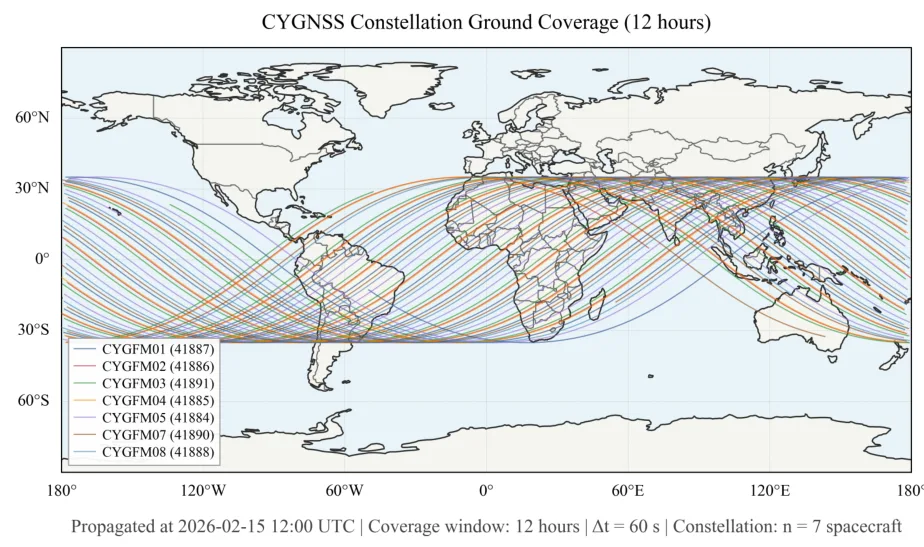
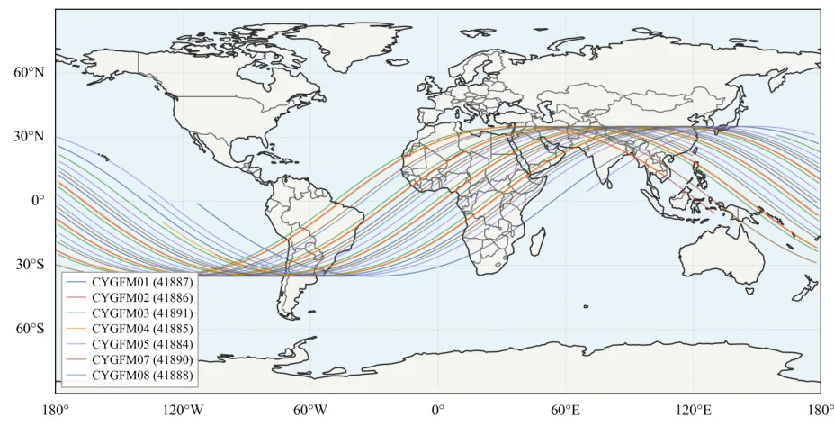
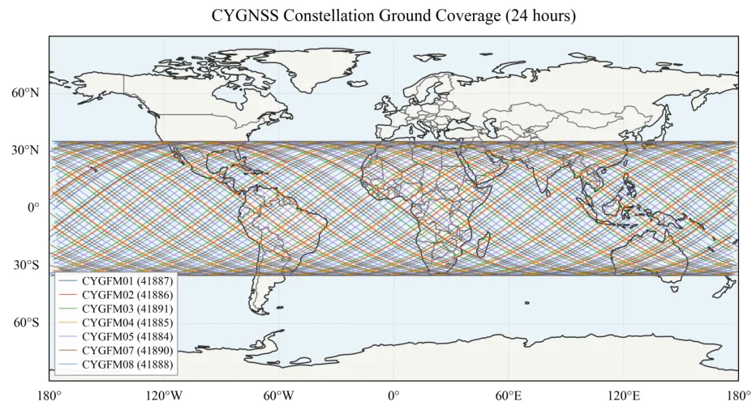
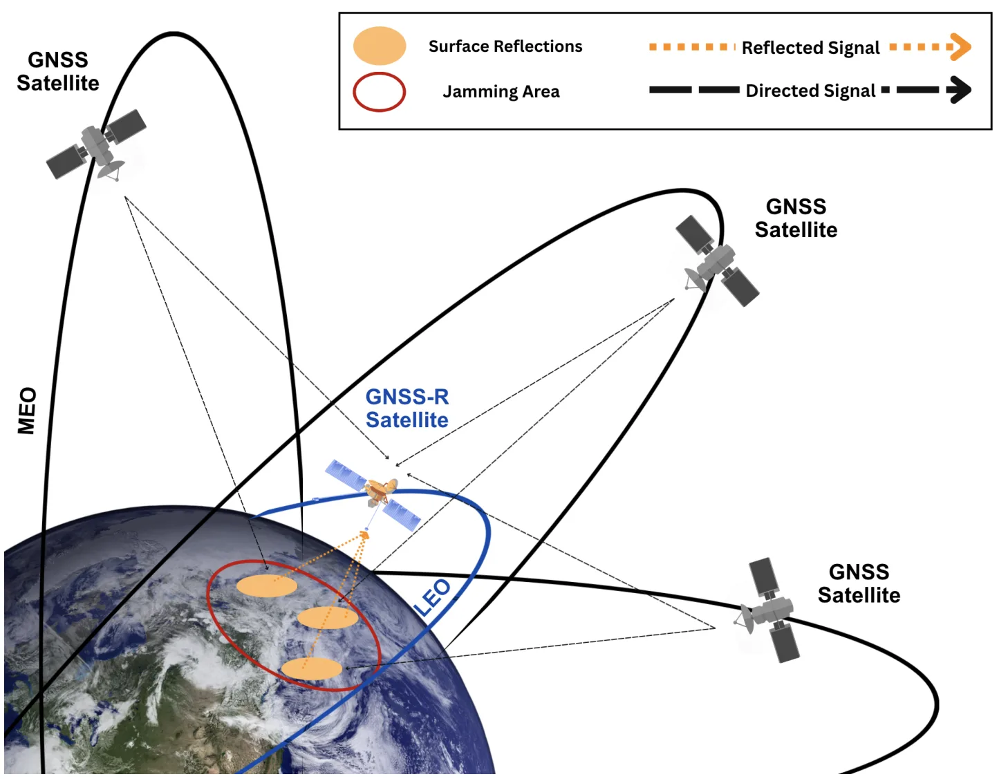
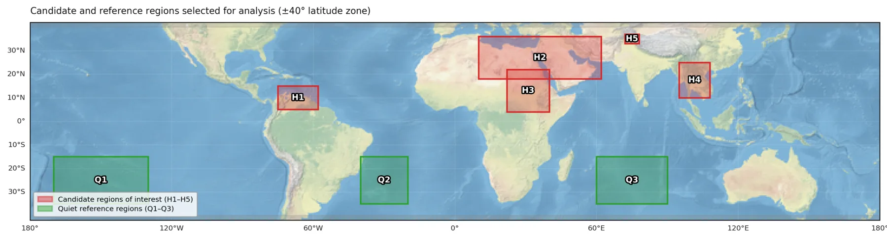
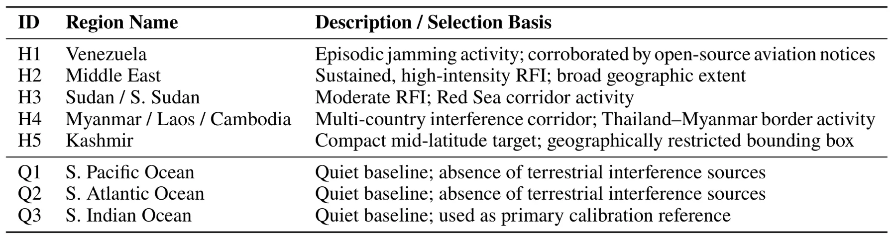

通过多卫星数据集成评估空间基 GNSS 射频干扰检测Space-Based GNSS Radio Frequency Interference Detection Evaluation Through Multi-Satellite Data Integration
对 GNSS 干扰监测和观测质量风险标注有价值；但它不做 GNSS/INS/SLAM 融合定位，也不涉及 RTK/PPP 或整数模糊度。
一句话工作总结
该工作用 CYGNSS 多星 DDM 数据评估 GNSS-R RFI 检测，量化星座规模对检测延迟、覆盖和持久性监测的收益。
摘要
空间基 GNSS reflectometry 可通过 delay-Doppler map forbidden zones 中升高的噪声功率检测地面射频干扰。本文利用 NASA PO.DAAC 归档中七颗 CYGNSS 卫星三个月的 Level 1 delay-Doppler 观测，评估星座规模对检测性能的影响。研究分析 detection latency、spatial coverage、spatial coherence 和 persistence monitoring reliability 四类指标。结果显示，相比单星，七星星座使中位检测延迟降低 4.7 倍，5 分钟发射的拦截概率从 2% 提升到 11.5%，足迹 revisit time 从 5.8 小时改善到 2 小时以内；单星会使最多 72% 的源结构无法分辨，持久性监测可比单星早 39 天确认干扰起始。最大收益出现在一到三星之间，三颗卫星被认为是最低有效星座规模。
Space-based GNSS reflectometry (GNSS-R) can detect terrestrial radio frequency interference (RFI) through elevated noise power in delay-Doppler map forbidden zones. This study evaluates how constellation size affects detection performance using Level 1 delay-Doppler observations from seven CYGNSS spacecraft collected over three months from the NASA PO.DAAC archive. Four metrics are analysed: detection latency, spatial coverage, spatial coherence, and persistence monitoring reliability. Results show that the full seven-satellite constellation reduces median detection latency by a factor of 4.7 compared with a single satellite and increases interception probability for a 5-minute emission from 2\% to 11.5\%. Median footprint revisit time improves from 5.8 hours to under 2.0 hours. Spatial coherence analysis indicates that a single satellite leaves up to 72\% of source structure unresolved. Persistence monitoring confirms interference onset 39 days earlier than single-satellite deployment. The largest gains occur between one and three satellites, establishing three satellites as the minimum effective constellation size.
中文解读摘录
- 链接：abs / PDF；类别：eess.SP；采集 score=6。
- 核心思路：利用 CYGNSS 多星 Level 1 delay-Doppler observations，在 forbidden zones 的噪声功率异常中检测地面 GNSS RFI，并评估星座规模对检测性能的影响。
- 方法要点：分析 detection latency、spatial coverage、spatial coherence、persistence monitoring reliability 四类指标；七星相对单星使 median detection latency 降低 4.7 倍，5 分钟发射拦截概率从 2% 提升到 11.5%，revisit time 从 5.8 小时改善到 2 小时以内。
- 关注点：不是 GNSS/INS/SLAM 融合定位论文，但可作为 GNSS 干扰监测、城市峡谷鲁棒定位风险标注和外部先验告警线索；最大收益出现在 1 到 3 星，作者认为 3 星是最低有效星座规模。
图表/页面预览

{kind=link}

{kind=link}

{kind=link}

{kind=link}

{kind=link}

{kind=link}
